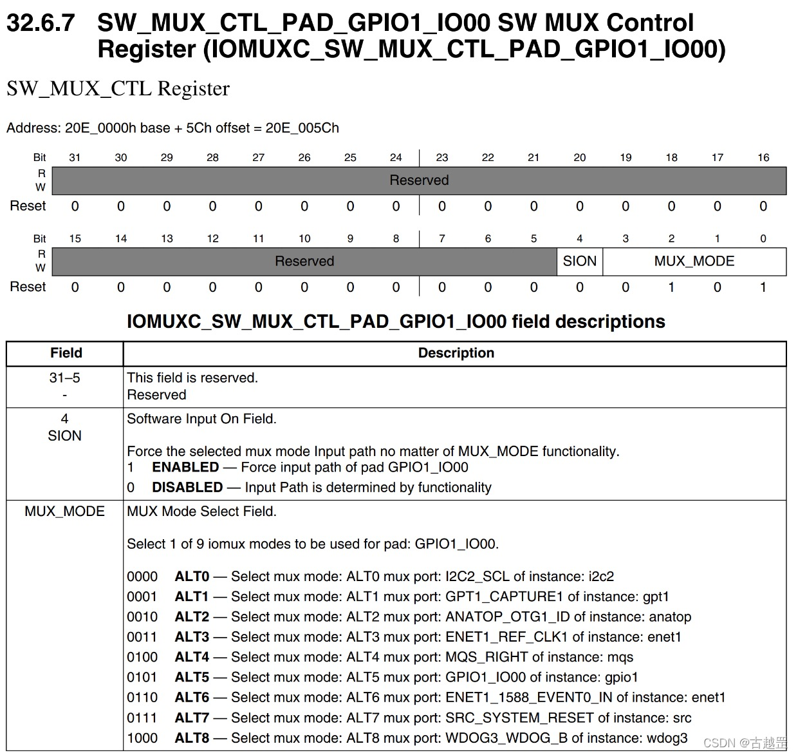

概述
基于 I.MX6ULL 总结 LED 点灯程序
一些基础知识
1 基础知识
- 首先,
IMX6ULL有对应的手册, 分为参考手册和数据手册 -
i.MX6ULL 有多种点灯方式：
-
- 1 裸机系统：汇编操作寄存器点灯、C 语言操作寄存器点灯
-
- 2 跑 Linux 系统：字符驱动 LED 点灯、设备树驱动 LED 点灯
究其本质，最终都是要操作 i.MX6ULL 的寄存器。比如，在控制 GPIO 引脚实现 LED 亮灭时，会进行类似如下的寄存器配置：
/* 寄存器物理地址 */
#define CCM_CCGR1_BASE (0X020C406C)
#define SW_MUX_SNVS_TAMPER3_BASE (0X02290014)
#define SW_PAD_SNVS_TAMPER3_BASE (0X02290058)
#define GPIO5_DR_BASE (0X020AC000)
#define GPIO5_GDIR_BASE (0X020AC004)
- I.MX6U 的 GPIO 一共有 5 组:GPIO1、GPIO2、GPIO3、GPIO4 和 GPIO5, 其中每个组最多 32 个 IO 口.
-
- 其中 GPIO1 有 32 个 IO，GPIO2 有 22 个 IO，GPIO3 有 29 个 IO、GPIO4 有 29 个 IO，GPIO5 最少，只有 12 个 IO，这样一共有 124 个 GPIO。
-
- 其中第一组 GPIO 的不同 IO 口命名方式为 GPIO1_IO00, GPIO1_IO01, GPIO1_IO02 以此类推.
2 基于 I.MX6ULL 的 GPIO 配置流程
- 使能 GPIO 对应的时钟。
- 设置寄存器 IOMUXC_SW_MUX_CTL_PAD_XX_XX，设置 IO 的复用功能，使其改为 GPIO 功能。（比如
IOMUXC_SW_MUX_CTL_PAD_JTAG_TRST_B这个 IO 口一共是 32 位，其中最低 4 位设置为 0101 即可将这个, 如果设置为其他值,则有其他不同的功能.) - 设置寄存器 IOMUXC_SW_PAD_CTL_PAD_XX_XX，设置 IO 的上下拉、速度设置、驱动能力设置、压摆率设置等等。
- 第 2 步已经将 IO 改为了 GPIO 功能，所以需要配置 GPIO，设置输入/输出、是否使用中断、默认输出电平等。
问题一 怎么找到对应 GPIO 的物理地址?
查看对应的数据手册里对应端口的介绍, 其中有 Address, 如下图:

-
I.MX6ULL 的 IO 分为两类:SNVS 域的和通用的 ----> 为什么要这样分类?
-
更多 I.MX6ULL 硬件知识
问题二 更多 I.MX6ULL 硬件知识 ---- 更多寄存器
-
SWMUX_CTL_PAD 和 SWPAD_CTL_PAD**两种寄存器用来设置 IO 的复用功能和 IO 属性 配置, 也就是我们通过设置上面这两种寄存器的不同值之后, 终于将某个 IO 口设置为了 GPIO 功能. 现在我们要接着来配置 GPIO 特有的寄存器了.
-
当 IO 用作 GPIO 的时候需要设置的寄存器，一共有八个: DR、GDIR、PSR、ICR1、ICR2、EDGE_SEL、IMR 和 ISR。前面我们说了 I.MX6U 一共有 GPIO1~GPIO5 共五组 GPIO，每组 GPIO 都有这 8 个寄存器。
-
- 比如第一组 GPIO 的寄存器命名方式为 GPIO1.DR, 第二组 GPIO 的寄存器命名方式为 GPIO2.DR
-
- 由于每组 GPIO 最多 32 个 IO 口, 因此相应寄存器对应的位数也为 32 位, 每一位控制对应的 IO 口. 比如 GPIO2.DR 是 32 位寄存器、GPIO1.PSR 寄存器也是 32 位
各个寄存器含义
- DR: 数据寄存器.
-
- 比如方向寄存器设置为输出, 那么此时向数据寄存器输出 1 即可向对应 IO 口输出高电平, 输出 0 即可向对应 IO 口输出低电平.(其实就比较好控制 LED 灯这种简单设备的开或者关)
-
- 比如方向寄存器设置为输入, 那么此时就是通过读取寄存器的值获取对应 IO 口对应的电平值(是高电平还是低电平)
- GDIR: 方向寄存器, 设置某个 IO 口为输出电平或者输入电平.
- PSR: 状态寄存器. 用于获取对应 IO 口的当前状态(当前是高电平或者低电平)
- ICR1 和 ICR2: 这两个寄存器，都是中断控制寄存器，ICR1 用于配置低 16 个 IO, ICR2 用于配置高 16 个 IO, 也就是每 2 位配置一个 IO. 比如某个外设（比如键盘）可以上升沿触发中断.
- IMR: 是中断屏蔽寄存器. IMR 寄存器也是一个 IO 对应一个位，IMR 寄存器用来设置 IO 的中断禁止和使能，如果使能某个 IO 的中断，那么设置相应的位为 1 即可，反之，如果要禁止中断，那么就设 置相应的位为 0 即可。例如，要使能 GPIO1_IO00 的中断，那么就可以设置 GPIO1.MIR=1 即 可。
- ISR: 中断状态寄存器.
- EDGE_SEL: 是边沿选择寄存器. EDGE_SEL 寄存器用来设置边沿中断，这个寄存器会覆盖 ICR1 和 ICR2 的设置，同样是一个 IO 对应一个位。如果相应的位被置 1，那么就相当与设置了对应的 IO 是上升沿和下降 沿(双边沿)触发。例如，我们设置 GPIO1.EDGE_SEL=1，那么就表示 GPIO1_IO01 是双边沿触 发中断，无论 GFPIO1_ICR1 的设置为多少，都是双边沿触发。
问题三 外设时钟使能
- I.MX6U 每个外设的时钟都可以独立的使能或禁止，这样可以关闭掉不使用的外设时钟，起到 省电的目的。
-
CCM 有 CCM_CCGR0~CCM_CCGR6 这 7 个寄存器，这 7 个寄存器控制着 I.MX6U 的所有外设时钟开关
-
根据CCM_CCGR0寄存器的使用说明, 我们发现如果我们要打开 GPIO2 的外设时钟，那么只需要设置 CCM_CCGR0 的 bit31 和 bit30 都为 1 即可，也就是 CCM_CCGR0=3 << 30。反之，如果要关闭 GPIO2 的外设时钟，那就设置 CCM_CCGR0 的 bit31 和 bit30 都为 0 即可。